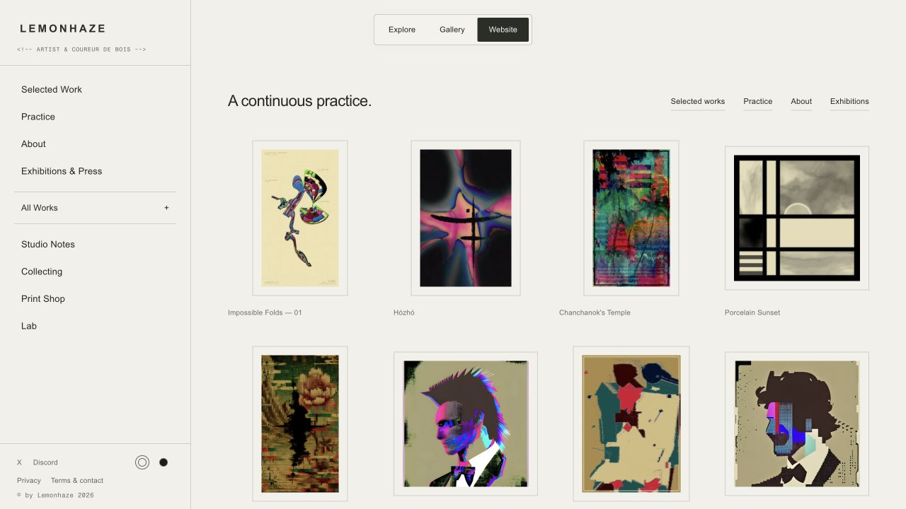
Website home
Shared wordmark, preserved content, removed date label, and native-ratio frames.
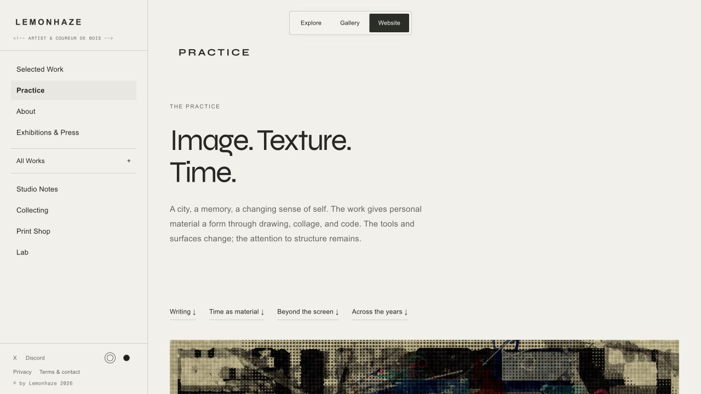
Website · Practice
Existing page copy with the persistent wordmark and mode controls.
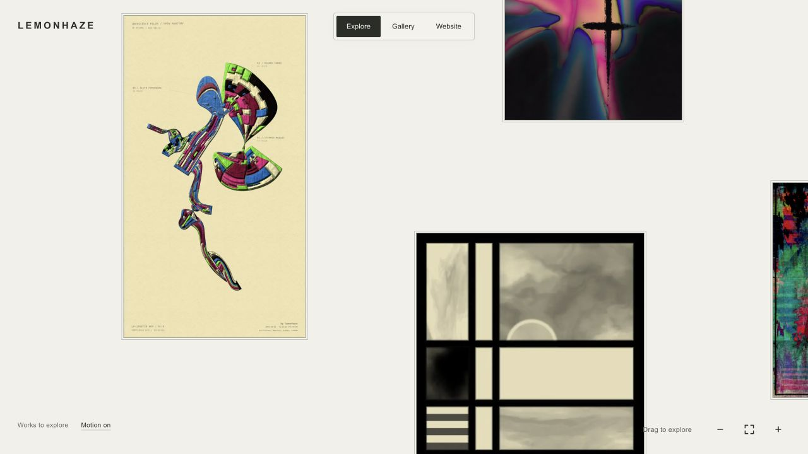
Explore landing
Approved composition with the sharp 900 × 1600 Impossible Folds preview.
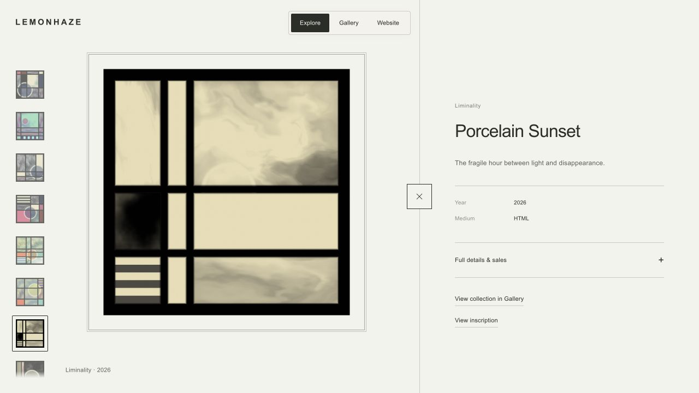
Porcelain Sunset · square live
Live canvas fills the same artwork area as its still; the wider mat stays outside it.
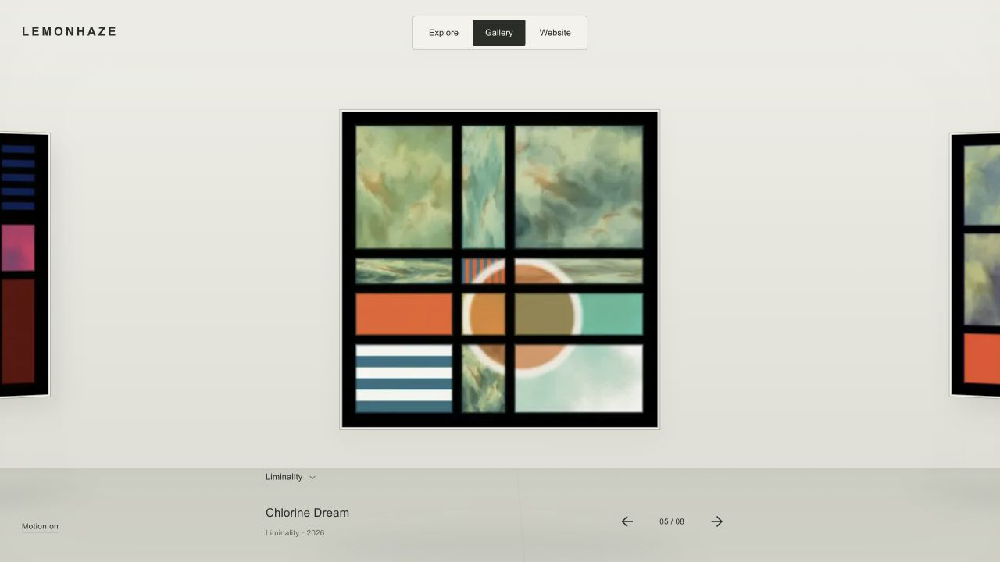
Gallery
Restrained carousel movement and one collection trigger.
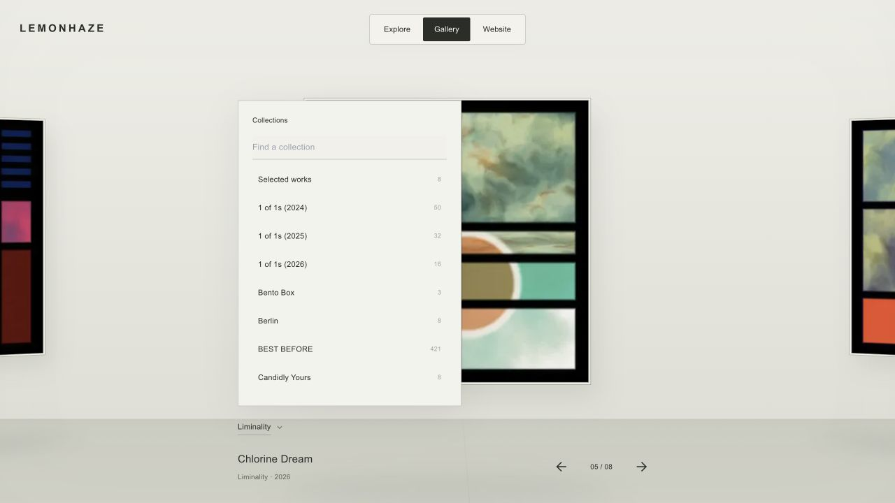
Collection chooser
Searchable collection list with midpoint entry and remembered positions.
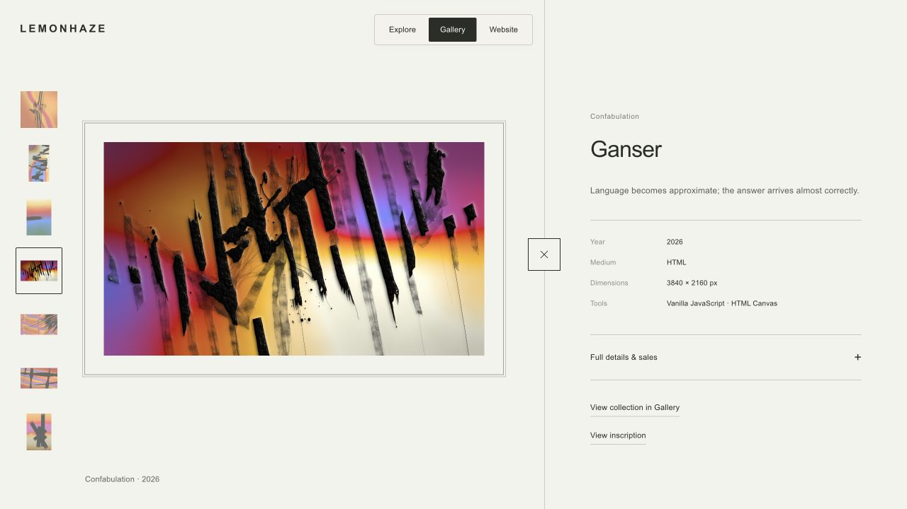
Ganser · landscape live
Original landscape ratio with an equal-width external mat.
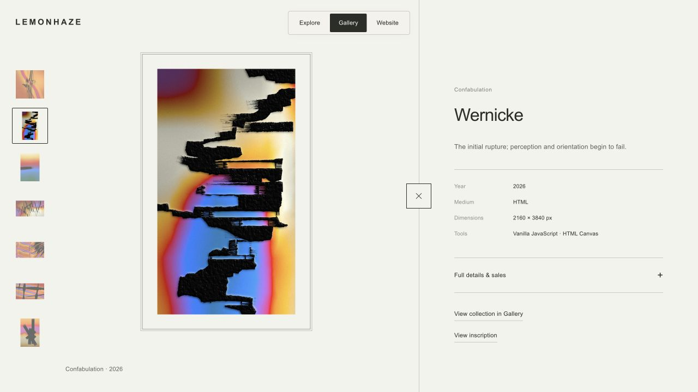
Wernicke · portrait live
Original portrait ratio and matching live/still bounds.
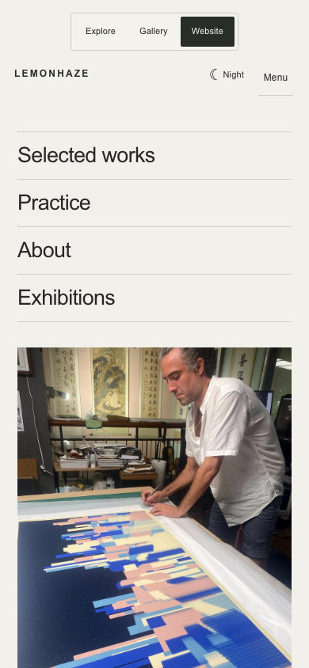
Mobile Website
Identity on the left, menu on the right, mode switch above.
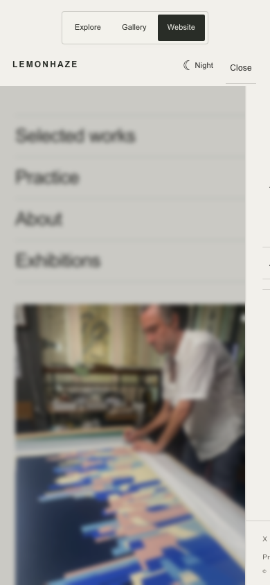
Mobile navigation
All sections remain accessible; the panel opens below the top controls.
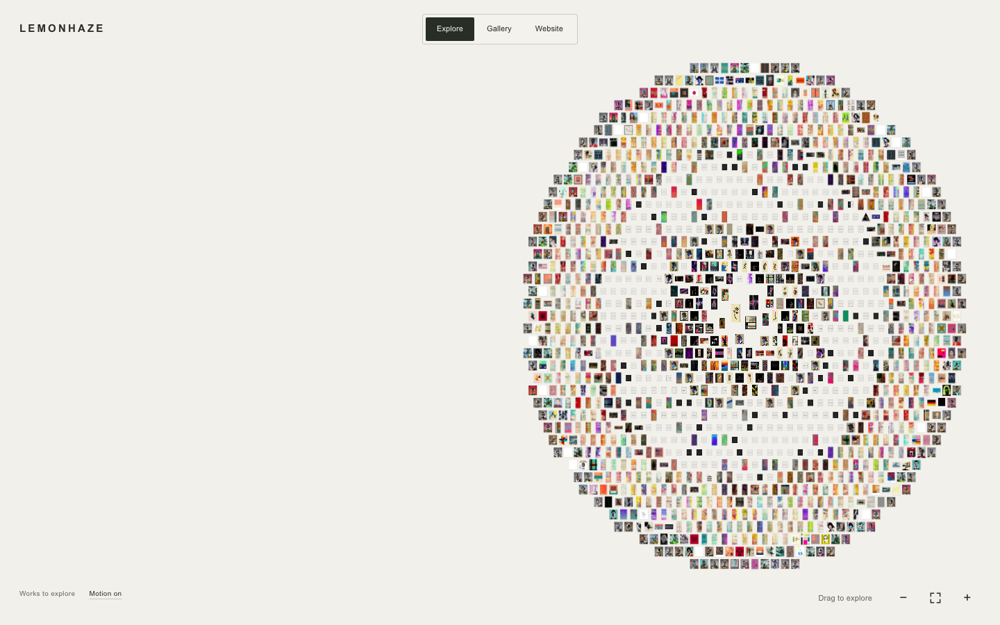
Whole-field wall impact
Stronger squash and rebound, with the whole field contained inside the viewport.